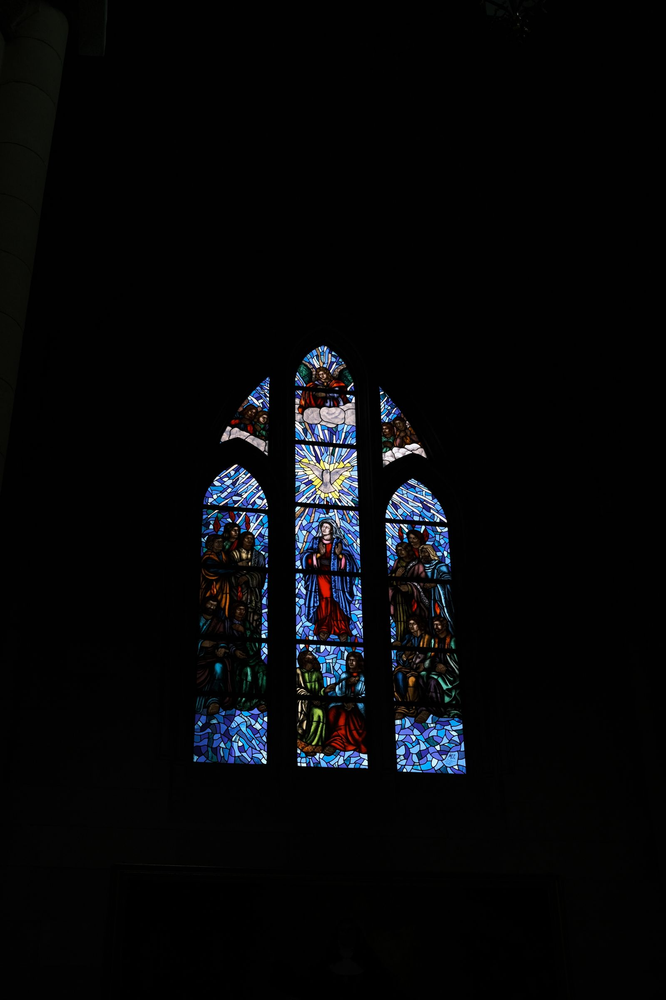

Historic stained glass conservation
You do not restore a window. You persuade it to last another century.
Fenn Glass Conservation surveys, documents and conserves historic stained glass for cathedrals, churches and heritage bodies. Every commission begins the same way — panel by panel, in writing. This page opens with a real report: the West Rose of St Cuthbert's, Aldburgh. Read the window the way the conservator does. Select any panel to read its condition note and build the conservation plan.
The condition & intervention planner
Tables R1 & T2, report CRW-2026-04A conservation plan is arithmetic before it is craft. Table R1 is the register of the West Rose as surveyed; Table T2 is the hours this practice allows each grade of work. Select panels — on the map above, in the readout, or in the register — and the plan adds itself up in the open, line by line. One panel will refuse to be scheduled. That refusal is the most important line in the report.
On narrow screens the register scrolls sideways; every row stays readable — or select panels on the map above instead.
| Panel | Position | Glass | Grade | Action (Table T2) | Hours | Plan |
|---|---|---|---|---|---|---|
| 1 | North petal | Ruby | B — stable | Clean & consolidate in situ | 6 | |
| 2 | North-east petal | Sapphire | C — deteriorating | Bench conservation | 22 | |
| 3 | East-north petal | Gold | A — sound | Monitor at annual inspection | 0 | |
| 4 | East petal | Green | D — critical | Bench conservation & partial relead | 38 | |
| 5 | East-south petal | Ruby | B — stable | Clean & consolidate in situ | 6 | |
| 6 | South-east petal | Sapphire | C — deteriorating | Bench conservation | 22 | |
| 7 | South petal | Gold | M — monitor only | No intervention — refused under the ethics rule | 0 | |
| 8 | South-west petal | Green | B — stable | Clean & consolidate in situ | 6 | |
| 9 | West-south petal | Sapphire | A — sound | Monitor at annual inspection | 0 | |
| 10 | West petal | Ruby | C — deteriorating | Bench conservation | 22 | |
| 11 | West-north petal | Green | D — critical | Bench conservation & partial relead | 38 | |
| 12 | North-west petal | Gold | B — stable | Clean & consolidate in situ | 6 |
| Grade | Condition | Action class | Hours per panel |
|---|---|---|---|
| A | Sound | Monitor at annual inspection | 0 |
| B | Stable — lead fatigued | Clean & consolidate in situ | 6 |
| C | Deteriorating | Bench conservation — panel removed, documented, returned | 22 |
| D | Critical | Bench conservation & partial relead | 38 |
| M | Monitor only | No intervention. The ethics rule: where treatment would destroy more original material than it saves, the report recommends no action — and says why, in writing. | 0 — refused |
Scaffold rate, printed so the plan can be checked: the bench-and-scaffold team completes 30 conservation hours per scaffold week. Scaffold weeks are the total hours divided by 30, rounded up.
The plan from this map
What a commission costs — the estimator
Fee table F1, printed in fullConservation is usually priced behind a closed door. Here the fee table is printed and the estimator simply does its arithmetic where you can watch it. These are planning figures for a faculty application, not a quotation: the survey fixes the grades, and the grades fix the price.
| Line | Rate | Quantity | Adjust |
|---|---|---|---|
| Condition survey — per day on site, report included | £950 | 2 days | |
| Panel conservation — per panel treated, all grades, materials included | £780 | 6 panels | |
| Releading — per panel, like-for-like cames | £420 | 2 panels | |
| Protective glazing — ventilated isothermal, fitted, per m² | £95 | 0 m² | |
| Documentation & panel map — flat, per window | £1,250 | 1 window | — |
Services register
All work under the building's own permissions| Service | For | Fee basis | Status |
|---|---|---|---|
| Condition surveys & panel maps | Cathedrals, parish churches, heritage bodies | £950 per day; written report and panel map included | Open — booking surveys for spring 2027 |
| Panel conservation | Buildings with graded C and D panels | From £780 per panel; replaced glass archived, never discarded | Open |
| Releading | Windows with failed or fatigued cames | From £420 per panel, like-for-like sections | Waitlist — next bench slot autumn 2027 |
| Protective glazing | Exposed windows, post-conservation protection | From £95 per m² fitted, ventilated isothermal systems | Open |
| Monitoring & annual inspection | Windows under a monitor-only recommendation | £380 per window per year; photographic comparison against the survey | Open |
What the client said
Attached to Case File 01, the West Rose“The report told us to leave our most precious panel entirely alone — and explained why so clearly that the whole commission voted for restraint. That is when we knew we had hired the right conservator.”

A window to survey? Commission a condition survey — one email is the whole first step.